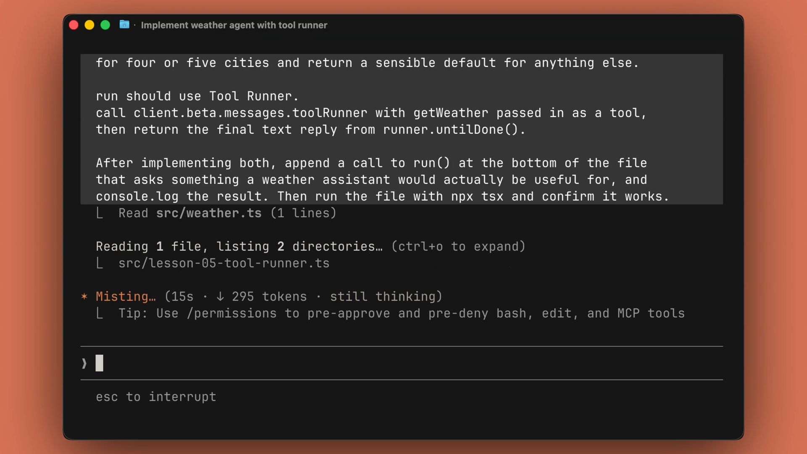
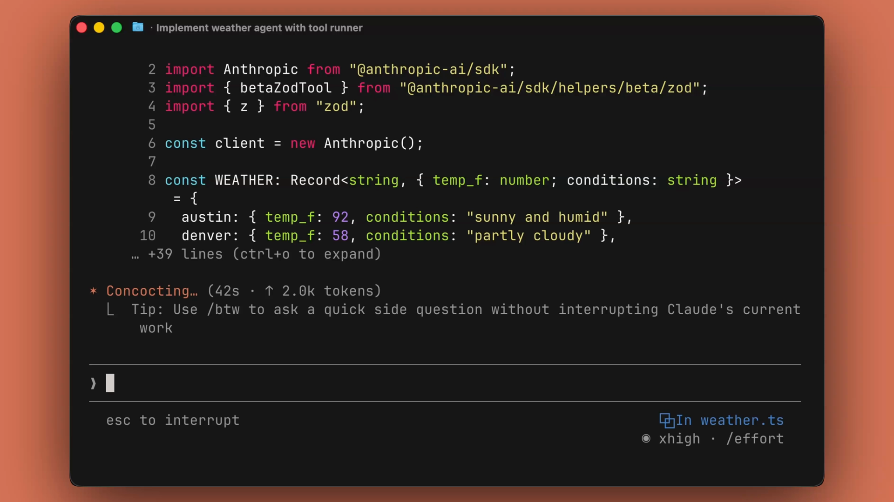

Разработка с Claude Code
Чему научитесь
Видео 1:57 и текст урока
К концу урока вы сможете:
- объяснить, что делает Claude Code и когда ему помогает встроенный skill Claude API (
/claude-api); - составить промпт, который называет файл, шаблон и ожидаемый конечный результат;
- узнавать знакомую схему кода для Claude API — инструмент, runner, результат — и поручать её Claude Code, проверяя diff.
Видео и текст урока.
Писать код, который обращается к Claude API, вручную — вполне рабочий способ, но есть путь ещё быстрее: поручить это самому Claude. В этом уроке мы с помощью Claude Code допишем интеграцию с API в файле, где пока одни заглушки, — опираясь на те же базовые элементы, которые вы изучили в этом курсе.
Начинаем с заглушек
Проект простой: файл на TypeScript, который узнаёт погоду. В нём две заглушки:
getWeather— принимает город и возвращает температуру и погодные условия;run— функция, которая должна использовать tool runner и Claude TypeScript SDK.
Tool runner — та часть SDK, которая берёт на себя вызов инструментов и цикл агента, так что связывать всё это вручную вам не придётся.
Skill Claude API
В Claude Code есть встроенный skill под названием Claude API. Его можно вызвать напрямую командой /claude-api, а можно положиться на Claude Code: он вызовет skill сам, когда заметит, что вы используете TypeScript SDK.
Один промпт — и код работает
Откройте папку проекта в терминале и запустите Claude Code.
Дальше хватит одного промпта. Хороший промпт делает три вещи:
- называет файл, который нужно изменить;
- называет шаблон, который нужно использовать;
- называет конечный результат, которого вы ждёте.
Затем Claude Code дописывает getWeather и run в соответствии с объявленными типами, добавляет вызов в конец файла, запускает скрипт и сообщает, что тот вывел. Если что-то падает, Claude Code читает сообщение об ошибке и исправляет код прямо на месте.

weather.ts и файл с примером tool runner.Что сделал Claude Code
В этом запуске Claude Code создал инструмент на Zod: он разбирает входные данные и возвращает результат в зависимости от города. Ещё Claude Code создал tool runner и функцию run, о которых мы просили, и вывел итоговый результат цикла агента.

betaZodTool и зашитые данные о погоде по городам.Шаблон, который стоит запомнить
Большая часть того, что вы пишете для Claude API, устроена по знакомой схеме:
- Определить инструмент.
- Передать его в runner.
- Вернуть результат.
Набирать это по памяти каждый раз не нужно. Вместо этого наметьте в файле заглушки, передайте его Claude Code и просто проверьте diff.
Итог
- Claude Code — агент, который правит файлы и выполняет команды прямо в вашем терминале.
- Встроенный skill Claude API загружается сам, когда Claude Code замечает TypeScript SDK, а ещё его можно вызвать командой
/claude-api. - Дайте Claude Code промпт, который называет файл, шаблон и конечный результат, — он напишет код, запустит его и сам исправит ошибки на месте.
- Код для Claude API устроен по знакомой схеме: определить инструмент, передать его в runner, вернуть результат. Наметьте заглушки, поручите работу, проверьте diff.
Дальше
Это последний урок курса. Проверьте себя официальным тестом Claude Platform 101 quiz в Academy (нужен вход в аккаунт), а затем нашим пробным экзаменом по всему курсу.
Оригинал урока: Building with Claude Code.